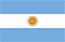
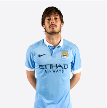

曼城足球俱乐部正式成立于1894年，目前征战于英格兰超级联赛及各大本土和欧洲赛场。
过去五年内，曼城不仅包揽英格兰本土的各项冠军奖杯，同时也在欧洲联赛取得了历史性的突破。
曼城始终坚守球队美丽足球的比赛风格，并拥有一众世界顶级球员，如阿圭罗、哈特、席尔瓦和德布劳内等。
去年10月23日，曼城训练基地同时也是其母公司城市足球集团的总部基地，接受了中国国家主席习近平的亲切访问。
曼城的母公司城市足球集团还拥有全球另三家俱乐部：纽约城FC、墨尔本城FC和横滨水手。
核心球员
-
 阿奎罗SERGIO
阿奎罗SERGIO
AGUERO阿根廷10 -
 德布劳内KEVIN
德布劳内KEVIN
DE BRUYNE 阿根廷17
阿根廷17 -
席尔瓦DAVID
SILVA 西班牙21
西班牙21